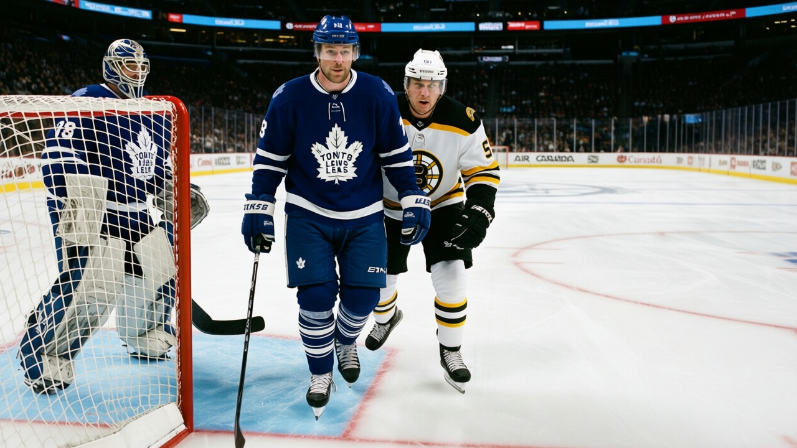

TOR
TOR PIT
PITLeafs 5, Bruins 0: second straight clean sheet, and the road starts Monday
Toronto wins its third in a row and heads to Pittsburgh for the first of four road games in five nights
 Sam OkaforLeafs beat reporter · Queen City Telegram
Sam OkaforLeafs beat reporter · Queen City Telegram
Toronto shut out Boston 5-0 Saturday at the Air Canada Centre, the second consecutive shutout after a 7-0 win over New Jersey on Thursday. The Maple Leafs have won three straight, dating to a 4-1 road win at New Jersey on January 3.
The Maple Leafs are 31-6-1 with 69 points, 24 ahead of second-place  Buffalo Sabres in the Northeast. They have scored 237 and allowed 109 in 41 games.
Buffalo Sabres in the Northeast. They have scored 237 and allowed 109 in 41 games.
 Boston Bruins arrived with a new starting goaltender.
Boston Bruins arrived with a new starting goaltender.  Steve Shields82 moved to G1 in place of
Steve Shields82 moved to G1 in place of  Andrew Raycroft83, and Boston added Chris Mason70 as the backup. The Bruins were without
Andrew Raycroft83, and Boston added Chris Mason70 as the backup. The Bruins were without  Glen Murray85, whose arm injury keeps him out until January 12. Boston sits at 15-19-3 with 39 points, fourth in the Northeast, and a 7-13 home record. The Bruins put 14 shots on goal against Toronto's 23.
Glen Murray85, whose arm injury keeps him out until January 12. Boston sits at 15-19-3 with 39 points, fourth in the Northeast, and a 7-13 home record. The Bruins put 14 shots on goal against Toronto's 23.
The blue line drove the shutout.  Robert Svehla84, 36, skates 23.5 minutes a night and won the Norris Trophy last season.
Robert Svehla84, 36, skates 23.5 minutes a night and won the Norris Trophy last season.  Bryan McCabe83, 29, leads all Maple Leaf defensemen with 46 points.
Bryan McCabe83, 29, leads all Maple Leaf defensemen with 46 points.  Jiri Fischer84, 24, carries 17 points in 36 games. Behind them:
Jiri Fischer84, 24, carries 17 points in 36 games. Behind them:  Rostislav Klesla83, 22, with 21 points in 41 games at 15.2 minutes a night. Steve Eminger76, 21, with 18 points in 31 games at 16.2 minutes. Carlo Colaiacovo72, 21, with 11 assists in 20 games at 18.5 minutes.
Rostislav Klesla83, 22, with 21 points in 41 games at 15.2 minutes a night. Steve Eminger76, 21, with 18 points in 31 games at 16.2 minutes. Carlo Colaiacovo72, 21, with 11 assists in 20 games at 18.5 minutes.
The road trip begins Monday at Pittsburgh, where the Penguins sit at 11-20-5 with 35 points and a one-game win streak. The Maple Leafs visit Boston on January 11, the Rangers on January 13, host Calgary on January 14 and close at Washington on January 17. Four of the five are on the road. Toronto is 13-4 away from home this season.